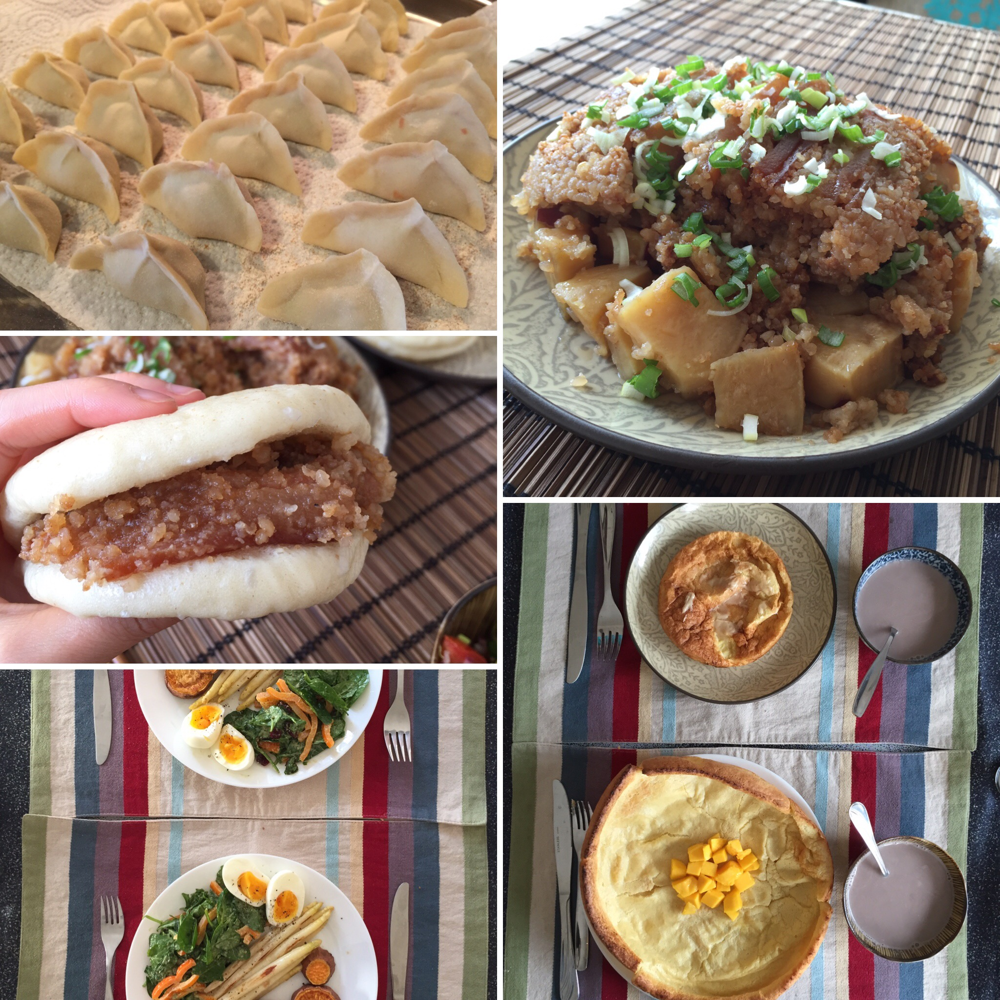
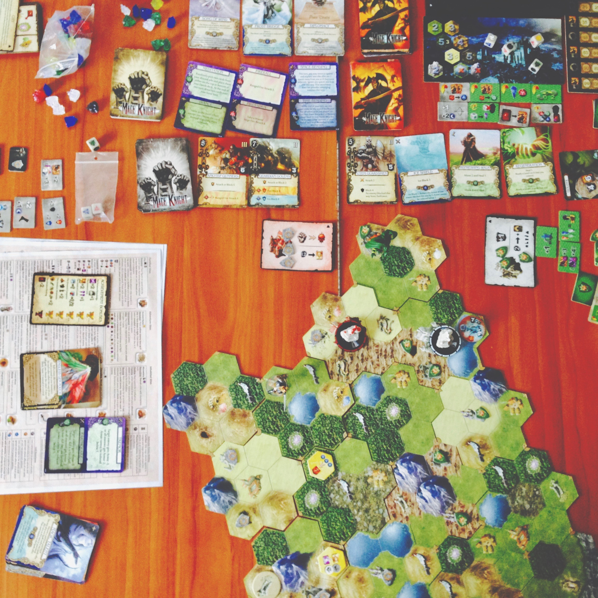
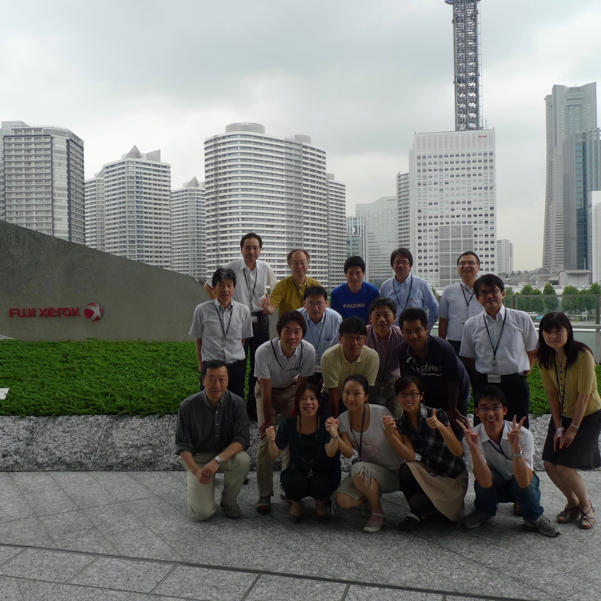

I like cooking, especially traditional Chinese dishes. Some of them are light. Some of them might take hours to prepare. The most important ingredient is patience. Everything else will come along.

It is a Life-Saving GAME.
My husband and I are board/card/dice game fans. We love our research, but we don't mind occasionally managing the power system, fighting virulent disease, or exploring the outer space for a little bit :)

Places I love
Xi'an
Ancient Charms
Biking along the city wall, and grabbing a bite from the busy food stand, this is what I define a perfect start of a day.

Yokohama
A Feast of Fusion
Old meets new, east meets west. This city taught me how to respect and appreciate differences. The people taught me how to give and share.
Chicago
Diving in the Loop
Five years of time makes me call it a second home. I will never know everything about it so I always have a reason to visit back.
Notre Dame
Calm and Focus
Mediation happens when walking on the campus. I enjoy being a researcher, especially here.